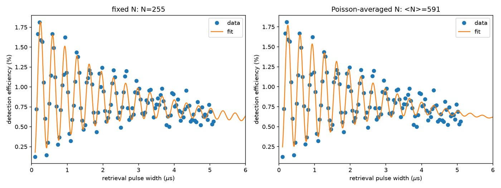
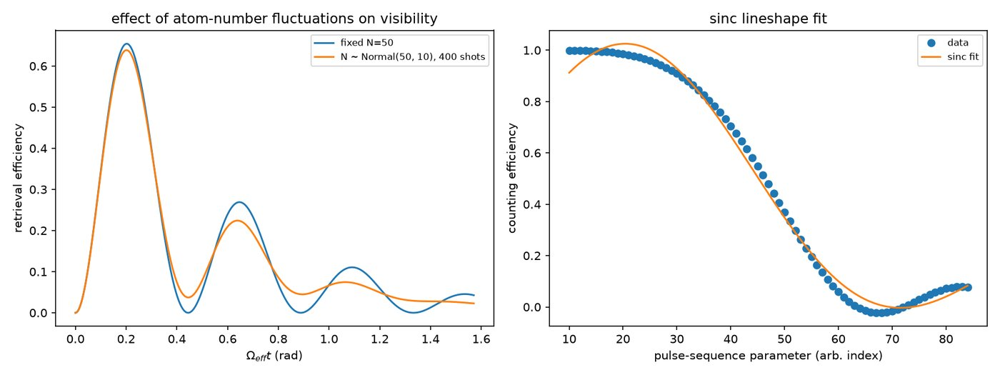
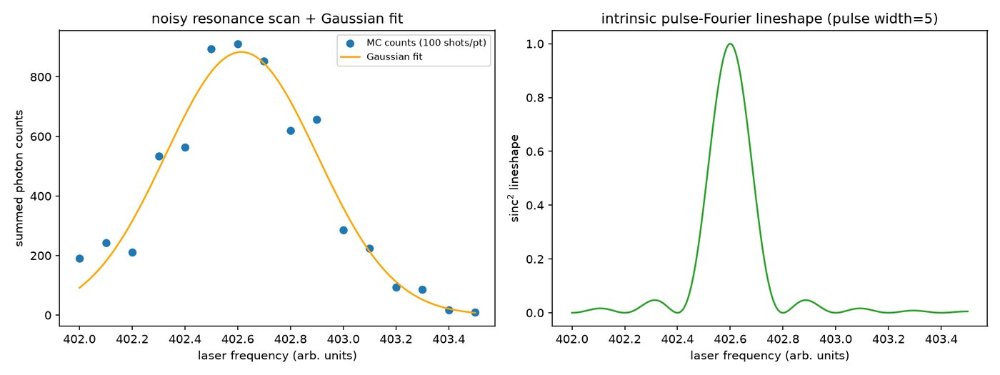
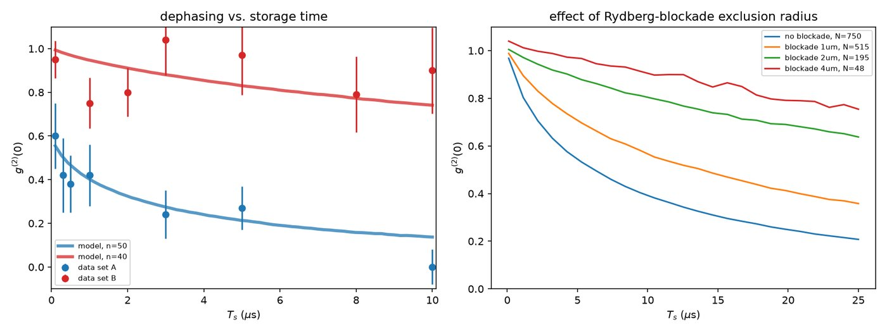

Y. Mei, Y. Li, H. Nguyen, P. R. Berman, A. Kuzmich
The same physics is also reproduced gate-level in Google Cirq, in a private companion repo.
An ensemble of ~1,000 ultracold 87Rb atoms, confined within a single Rydberg blockade radius, is coherently driven between the ground state |g⟩ and a Rydberg state |r⟩ by a two-photon field. Because the blockade forbids two atoms from being excited at once, the ensemble behaves as a single collective two-level system — a superatom qubit — and the single collective excitation oscillates faster than a lone atom would.
This √N enhancement is the same collective-coupling effect behind superradiance: N atoms sharing one excitation couple to the driving field N× more strongly in amplitude than a single atom, so the Rabi frequency scales as the square root of the atom number rather than the atom number itself.
Two things limit how long that oscillation survives. First, the atom number fluctuates shot to shot (Poissonian loading), and since ΩN depends on N, that fluctuation smears the ensemble-averaged oscillation into a decaying envelope even with no real decoherence. Second, once more than one excitation is present, van der Waals interactions between Rydberg-excited atom pairs shift their relative phase and dephase the retrieved light’s second-order correlation g⁽²⁾(0) as a function of storage time. The paper addresses the first two effects directly and combats the remainder with a magic-wavelength optical lattice — a trap wavelength at which |g⟩ and |r⟩ experience equal AC Stark shifts, removing the dominant source of inhomogeneous dephasing — plus a dynamical-decoupling pulse sequence, together extending the qubit’s coherence time roughly an order of magnitude over an undecoupled, non-magic trap.




rabi_fitting.py — collective √N Rabi decay fit to real retrieval-efficiency dataeffect_of_n.py — Monte Carlo: atom-number fluctuations reduce Rabi-oscillation visibilitymc_resonance_locating.py — Monte Carlo model of locating a laser resonance via photon countingdephasing_g2_box.py — van der Waals dephasing of g⁽²⁾(0) vs. storage time, box-shaped cloud